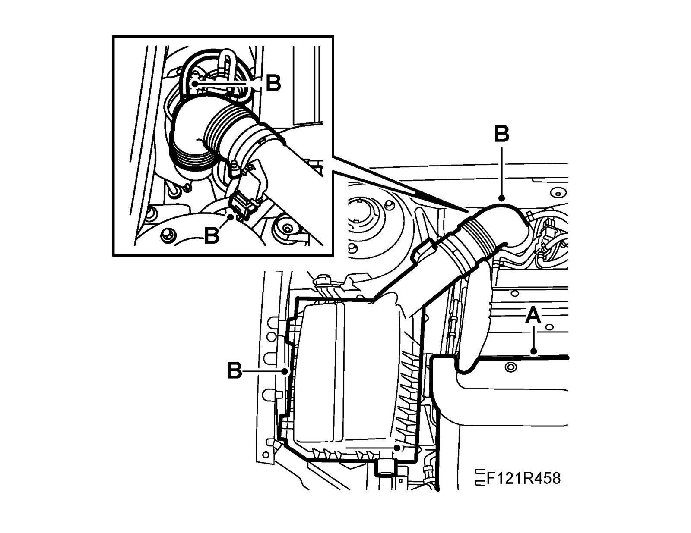
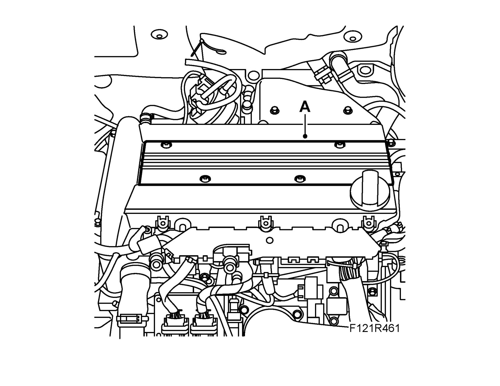
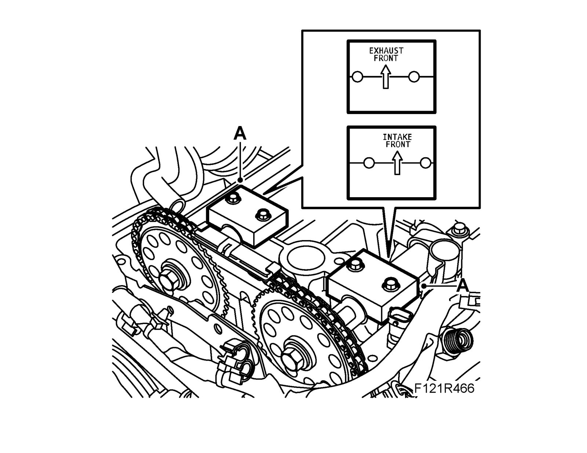
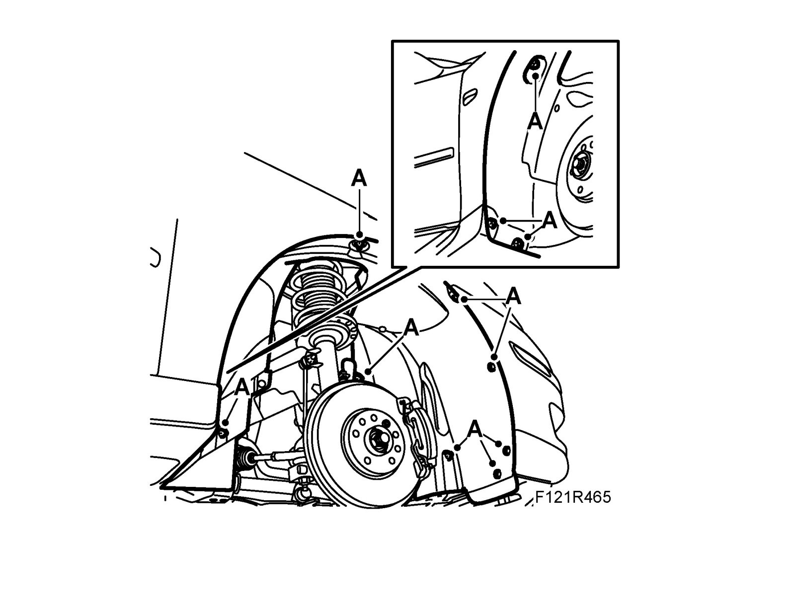
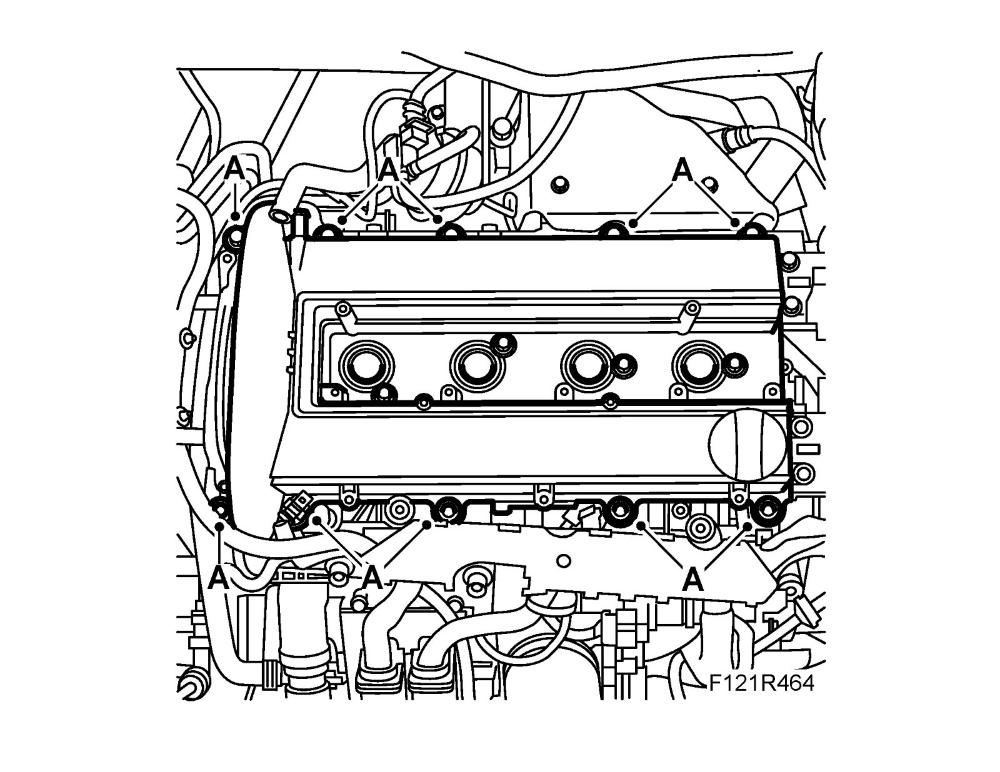
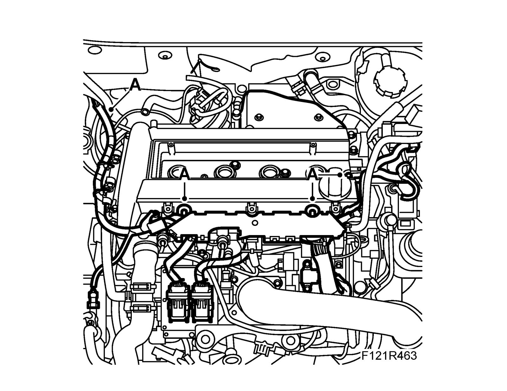
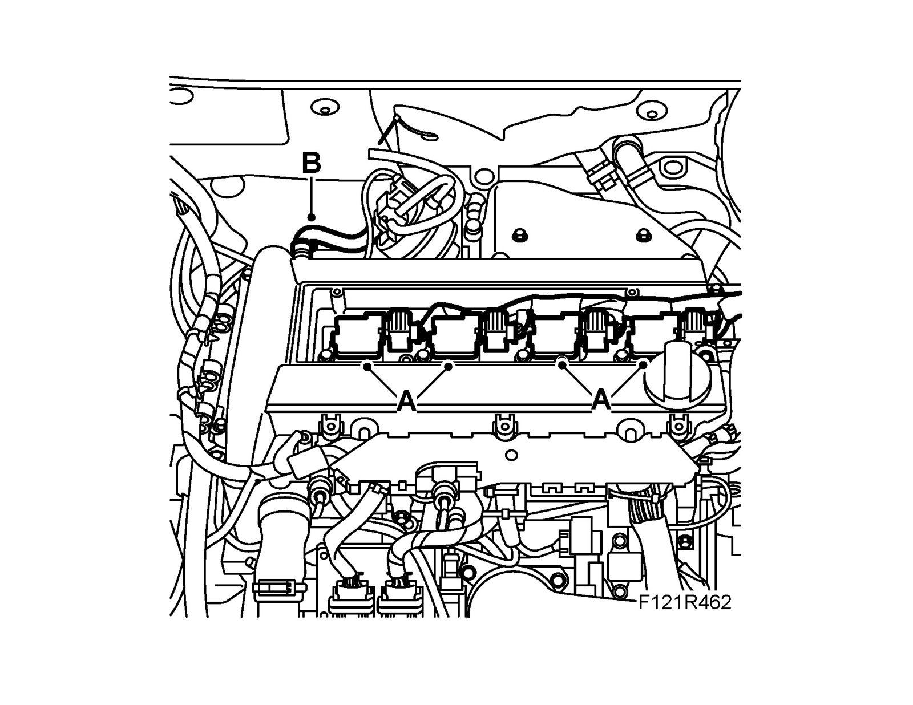
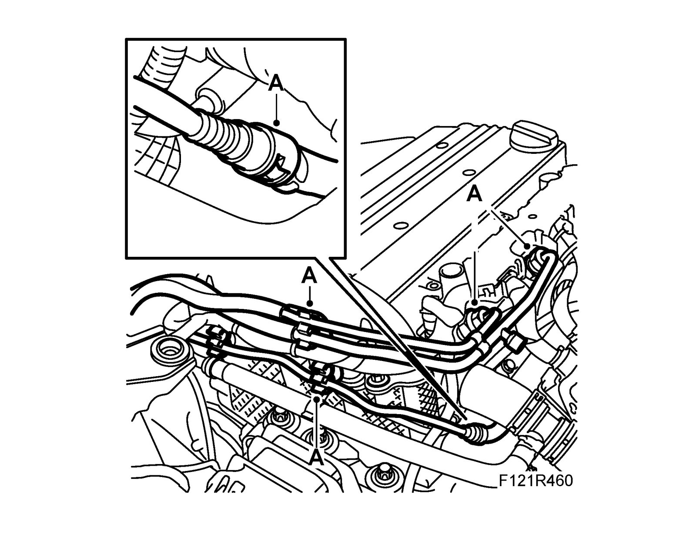
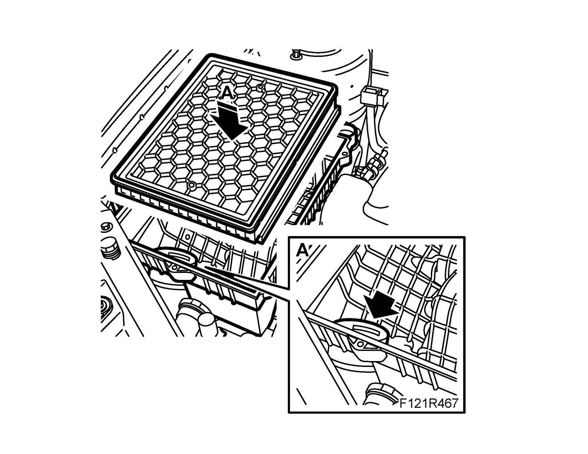

Procedures
Check camshaft settingTo remove
1. Remove the upper engine cover (A).

2. Unplug the mass air flow sensor connector. Detach the turbocharger inlet hose from the filter casing (B).
3. Remove the air filter.
4. Detach the fuel pipes and remove the mounting bolts from the camshaft cover (A).

5. Remove the cover over the ignition coils (A).

6. Remove the bolts, lift up each ignition coil and move aside. Start with the ignition coil for cylinder 1 (A).

7. Detach the crankcase ventilation hose from the camshaft cover (B).
8. Undo the cable duct from the cylinder head and camshaft cover and carefully move it aside. Remove the temperature sensor's connector. (A)

9. Remove the camshaft cover.

10. Raise the car and remove the right-hand wheel.
11. Remove the right wing liner.

12. Relieve the belt tensioner and remove the belt. Use 83 96 095 Belt circuit relieving tool. Mark the direction of rotation of the belt.
13. Lower the car and zero the engine by turning the crankshaft in the direction of engine rotation until the mark on the crankshaft pulley agrees with the mark on the timing cover. The cams on cylinder 1 intake and exhaust camshaft must be pointing in/up.
14. Remove the exhaust camshaft and intake camshaft bearing shells (A) no. 2 and no. 7. Position the EN-48368 Adjustment tool, camshaft (210 hp) and EN-48366 Adjustment tool, camshaft (150 - 175 hp) by pressing down the tool by hand onto the camshafts without tightening the bolts

15. If the adjustment tool does not fit onto the cams, loosen some of the camshaft pulley bolts, grip the camshaft flats with a wrench. Tighten the adjustment tool bolts.
Tightening torque 10 Nm (7 lbf ft)
16. Check that the markings on the crankshaft pulley and the timing cover are aligned. Tighten the camshaft gears a first time. Use a spanner to grip the camshaft flats.
Tightening torque 30 Nm (22 lbf ft)
17. Remove the adjustment tool and fit the bearing caps.
Tightening torque 8 Nm (6 lbf ft)
18. Continue to tighten the camshaft gears to the final torque. Use a spanner to grip the camshaft flats.
Tightening torque 85 Nm + 30° (63 lbf ft +30°)
19. Rotate the crankshaft 2 turns in the direction of engine rotation until the mark on the crankshaft pulley agrees with the mark on the timing cover. Remove the bearing caps and fit EN-48368 Adjustment tool, camshaft (210 hp) and EN-48366 Adjustment tool, camshaft (150 - 175 hp) again to check that the camshaft setting is correct. Remove the adjustment tools and refit the bearing caps.
Tightening torque 8 Nm (6 lbf ft)
To fit
1. Raise the car, relieve the belt tensioner and refit the belt in the direction of rotation marked.
2. Fit the right-hand wing liner (A).

3. Fit Wheel.
4. Lower the car and fit the camshaft cover (A) with new seals. Take care not to disturb the position of the seals when fitting.
Tightening torque 10 Nm (8 lbf ft)

5. Fit the cable duct onto the camshaft cover and connect the temperature sensor.

6. Connect the crankcase ventilation hose to the camshaft cover (B).

7. Fit the ignition coils (A). Start with the ignition coil for cylinder 4.
Tightening torque 8 Nm (6 lbf ft)
8. Fit the cover over the ignition coils (A).

9. Fit the mounting bolts to the camshaft cover and fit the fuel pipes (A).

10. Refit the air filter (A).

11. Fit the filter housing cover. Plug in the mass air flow sensor connector. Connect the turbo inlet hose to the air filter (B).

12. Fit the upper engine cover (A).